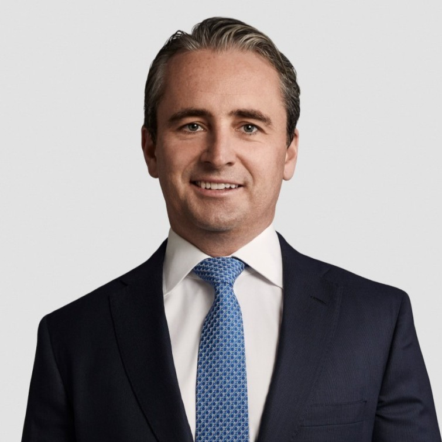
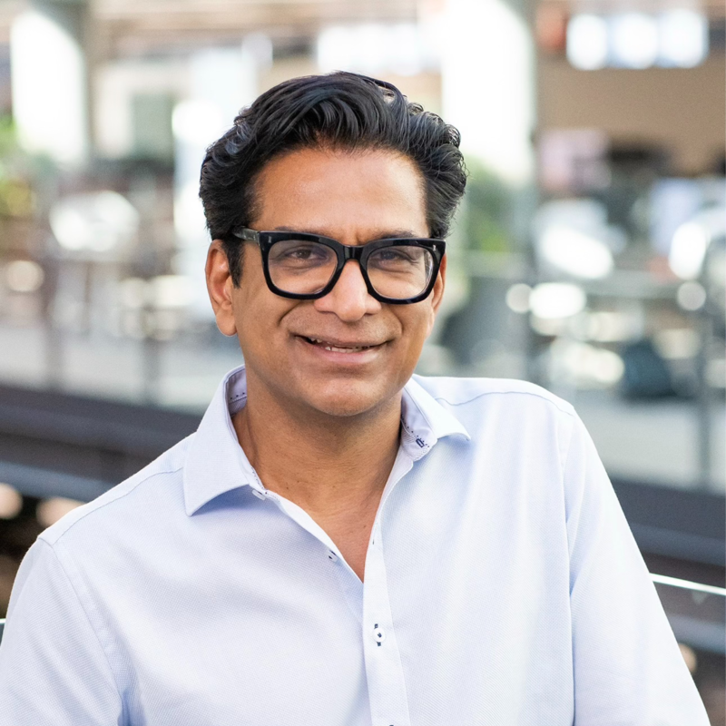
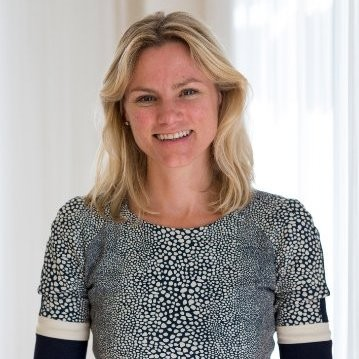
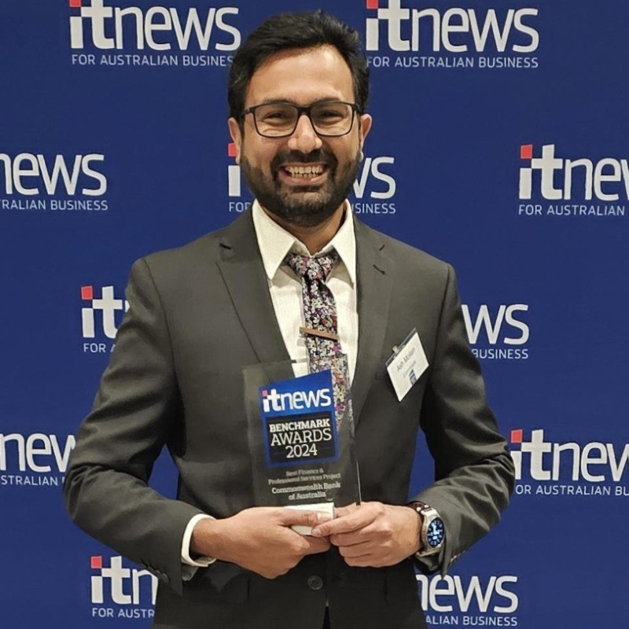
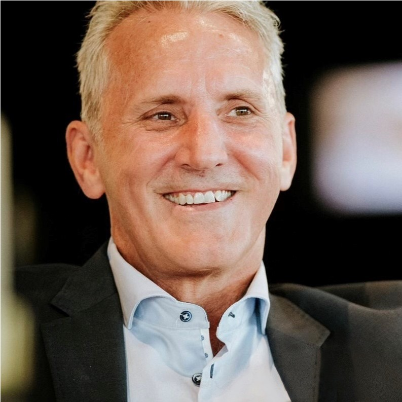
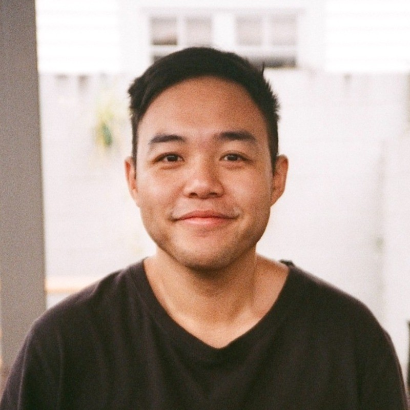
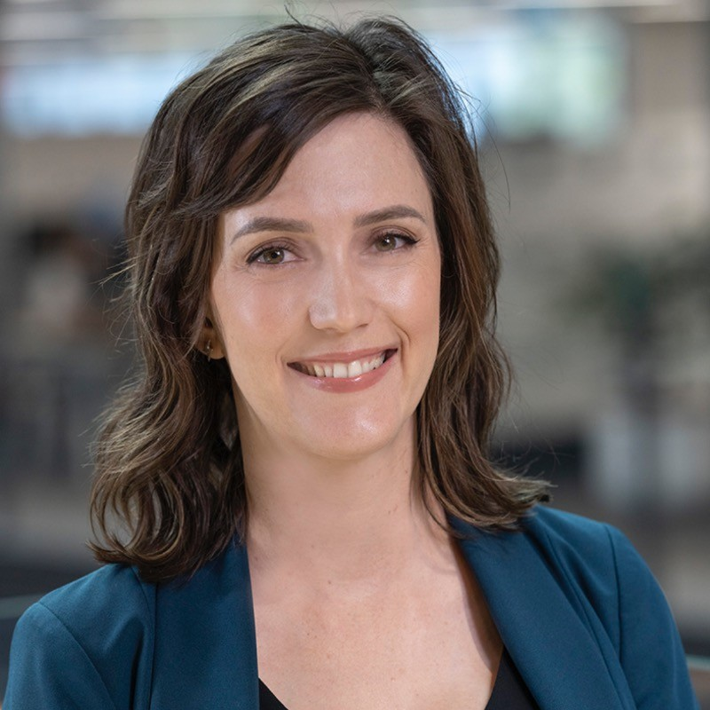
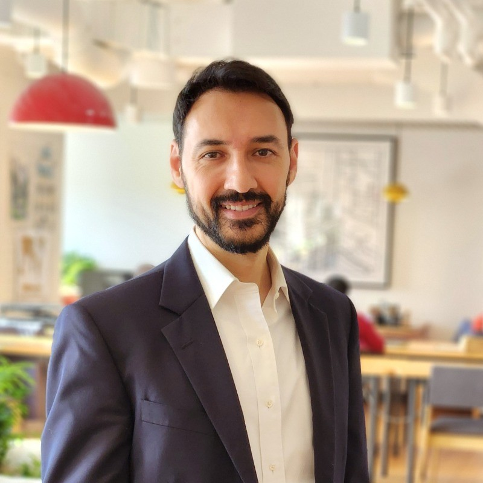
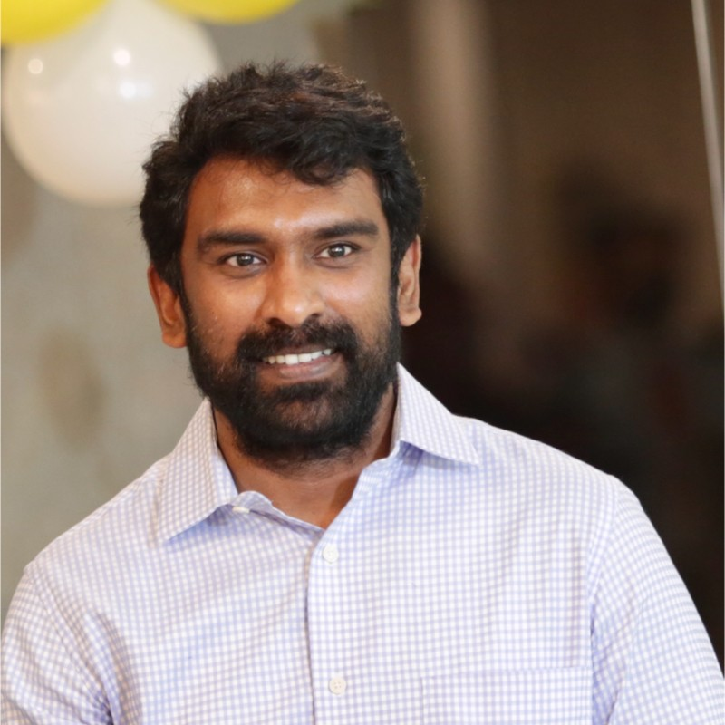

Sales Intelligence for Cognition AI — RVP Hayden Sherriff · Updated May 2026









Five SI & cloud partners that accelerate Devin's path into CBA — with key contacts and outreach angles for each
CBA preferred cloud provider · 10+ year relationship · 5-year SCA signed Feb 2025 · All new workloads default to AWS
Dilan Rajasingham FIRST MOVE
FSI Lead, Customer Strategy & AI
Ex-CBA 13 years — bridges Cognition into AWS FSI & CBA engineering leadership
Head of Modernization / ProServe (Lumos)
Built Lumos with CBA — owns the technical relationship directly
Partner Sales Manager, Growth ISVs
Manages ISV growth partnerships including Marketplace co-sell
17–20 year CBA relationship · A$200M+/yr · Largest AWS migration in Southern Hemisphere (May 2025) · 370-app modernisation pipeline live
Guruprakash Rajagopalan FIRST MOVE
AVP & CBA Client Partner
Named CBA Client Partner. Owns the commercial relationship. guruprakash.rajagopalan@hcl.com
GM / AWS BU Head ANZ
AWS BU lead — warm entry via Dilan Rajasingham at AWS. NavjotSingh@hcl.com
CTO & Head of Ecosystems (Global)
Global CTO — executive escalation layer for partnership formalisation
18+ year CBA engagement · Programme assurance on every major SAP initiative · Named in June 2026 CBA case study · Global Devin partner — ANZ activation required
Nicola Skinner FIRST MOVE
MD, Financial Services Technology
Named on June 2026 CBA core banking case study as MD leading the engagement
Ian Pollari
MD, Financial Services Lead ANZ
Senior FSI lead; co-leads Accenture's ANZ banking practice
Wendy Saint Ruth
MD, Technology ANZ — Banking & Capital Markets Account Lead
Technology account lead for banking and capital markets in ANZ
Frank Debusmann
Associate Director, Cloud (CBA delivery)
Cloud delivery lead on the CBA account — technical relationship
Matt Coates
ANZ Technology Lead
ANZ-wide technology leadership — broader activation conversations
Global Cognition partnership LIVE (Feb 2026) · ANZ expansion underway · 100+ ANZ hires H1 2026 · FSI-only consultancy · 9 of world's 10 largest banks as clients
Scott Grigg FIRST MOVE
Country MD, Australia
New Country MD (March 2026); leads ANZ expansion. Reference Feb 2026 global partnership.
MD BFSI ANZ (likely CBA account lead)
BFSI MD — likely owns CBA account relationship in ANZ
CTO ANZ
Technical decision-maker for ANZ practice — strong Devin conversation candidate
Mihir Shah
Global President EMEA/APAC/India (Partnership owner)
Signed the global Cognition partnership — warm reference for ANZ conversations
Australia's largest independent tech consultancy · 900+ engineers · A$200M ARR · AWS Premier Partner · ANZ Partner of Year 2020/22/24/26 · DHP & Tech Simplification delivered for CBA
Sam McLeod FIRST MOVE
Principal AI Engineering
Already runs agentic coding workflows (Cline, Cursor). Natural champion — peer-to-peer technical conversation.
Nick Denison FIRST MOVE nick.denison@mantelgroup.com.au
Client Principal (Sydney)
Confirmed email. Owns Sydney client relationships including CBA. Brief with Sam McLeod simultaneously.
CTO
Publicly advocates agentic AI — executive champion target. Follow McLeod + Denison with Durbin.
Adrian Lai
Partner, Digital (Sydney)
Digital practice partner — broader partnership conversations
Inez Garcia
Head of Strategic Pursuits
Strategic pursuits lead — formal partnership proposal route
Accountable exec for Agentic AI at scale. Dual-hatted CTO+CIO. Highest authority over software engineering. Direct buyer.
New CAIO, actively shaping strategy. First-mover opportunity. Approach in tandem with Castillo.
Technical champion who ran AI for 2 years. Key evaluator. Critical internal champion.
Owns the largest engineering delivery unit. Strong buyer for engineering velocity tools.
Strategic sponsor. Engage via executive briefing after CTO/CAIO buy-in established.